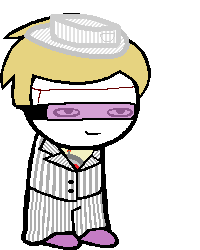

Maid of Dream
Full name: Tomas Rhodes
Trolltag/Chumhandle: prospitianArchagent
Quirk: The quick brown fox jumped over the lazy dog.
Associated Colour: #d5a6bd
Session:
Dancestor: Just
Modus: The Inventory-modus
(Each object is assigned a position on a grid. You can take out whatever you like, when you like.)
Strife Specibus: Revolverkind
Server: N/A
Client: N/A
Matesprit: Ship!Sara
Kismisis: N/A
Morail: N/A
Auspistice: N/A
Land:
Your land is the PROSPIT in SPACE. You do not have a normal land, as you were never technically a player. You live on said ship with all the other Ship! Players.
Notes 1:
- Is the Prospitian Archagent.
Notes 2:
- Wiped out his primary target on his first day of the job.
- Got a rad ship to live in with his friends.
- His first mate is Mike.
- Earned a snazzy suit after becoming the PA.